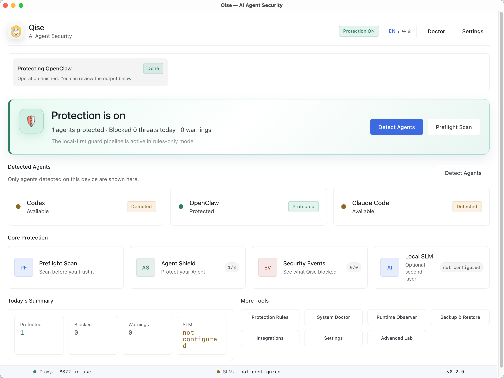

01
运行前扫描Scan Before Trust
在启用 skill、MCP 配置或 Agent 配置前，识别注入文本、风险命令和可疑回调。 Inspect skills, MCP configs, and agent configs before enabling them.
端侧AI智能体安全助手Qise 是一款类“Agent 360”安全软件，为个人电脑的 Codex、Claude Code、OpenClaw 和自定义 Agent 增加一层可审计的本地安全防护：扫描集成、接入 Guard Proxy、拦截危险动作，并记录清晰的安全事件。 Qise runs on your own machine and adds an auditable local safety layer for Codex, OpenClaw, Claude Code, and custom agents: scan integrations, route traffic through a guard proxy, block risky actions, and keep readable security events.

桌面应用和 CLI 共享同一套 Python Qise 产品引擎，保护行为保持一致，适合普通用户、终端用户和 Agent 开发者。 The desktop app and CLI share the same Python Qise product engine, keeping protection behavior aligned for users, terminal workflows, and agent developers.
在启用 skill、MCP 配置或 Agent 配置前，识别注入文本、风险命令和可疑回调。 Inspect skills, MCP configs, and agent configs before enabling them.
把 Agent 的模型请求接入本地代理，在工具调用真正执行前进行上下文审查。 Route model traffic through a local proxy and review context before execution.
覆盖 shell、文件系统、网络、凭据与外传等风险类别，阻断高危操作。 Cover shell, filesystem, network, credential, and exfiltration risks.
本地 JSONL 事件记录风险、证据、判定和建议；默认不保存完整模型流量。 Keep local JSONL events with risk, evidence, verdict, and recommendations.

识别 Codex、OpenClaw、Claude Code 等本地 Agent 环境。 Find supported local agent environments such as Codex, OpenClaw, and Claude Code.
备份配置，将 Agent 流量接入 Qise 本地代理，保留可恢复路径。 Back up config, route agent traffic through Qise, and keep a restore path.
查看风险、证据、判定和建议，理解每一次告警或拦截。 Review risk, evidence, verdicts, and recommendations for warnings and blocks.
Qise 同时提供桌面产品、CLI 和开发者适配入口。 Qise offers a desktop product, CLI workflows, and developer adapters.
Desktop App
用可视化页面检测 Agent、一键保护、查看事件日志和备份状态。 Detect agents, protect them, view events, and manage backups visually.
qise CLI
运行 scan、protect、check、events 等命令，把安全检查写入自动化流程。 Run scan, protect, check, and events commands inside automated flows.
SDK / Adapters
把 Qise 检查接入 LangGraph、OpenAI Agents SDK、Nanobot、Hermes 或 NexAU。 Add Qise checks to LangGraph, OpenAI Agents SDK, Nanobot, Hermes, or NexAU.
根据当前仓库中的 README 与 docs 内容整理，先给访问者一条清晰的阅读路径。 A clear reading path collected from the current README and docs in this repository.
从第一次检测 Agent、开启保护到查看事件，快速走完产品闭环。 Walk through detection, protection, and event review for the first product loop.
阅读文档Read doc了解从 Release 安装桌面应用，或从源码构建 macOS 应用与 CLI 的方式。 Install from releases or build the desktop app and CLI from source.
阅读文档Read doc理解 Qise 如何连接 Agent、本地系统工具、Guard 引擎与上游模型 API。 Understand how Qise connects agents, local tools, guard engines, and model APIs.
阅读文档Read doc查看规则、语义审查和多类别风险识别如何协同工作。 See how rules, semantic review, and risk categories work together.
阅读文档Read doc了解本地状态、备份、事件记录和模型流量的隐私边界。 Review privacy boundaries for local state, backups, events, and model traffic.
阅读文档Read doc梳理提示注入、恶意工具描述、危险命令和数据外传等风险场景。 Map prompt injection, malicious tool descriptions, unsafe commands, and exfiltration risks.
阅读文档Read doc前往 GitHub Releases 获取 macOS Apple Silicon DMG 或 Windows x64 安装包。项目仍处于 alpha/MVP 阶段，欢迎通过 Issue 和 PR 反馈。 Go to GitHub Releases for the macOS Apple Silicon DMG or Windows x64 installer. Qise is still an alpha/MVP project, and issues and pull requests are welcome.